Overview
This project worked through the classic problem of stress concentration around a circular hole in a loaded plate, building up in stages from a clean, idealized case to a fully three-dimensional one. I started with the textbook infinite-plate solution as a benchmark, verified it with a 2D finite element model, then deliberately narrowed the plate until the finite-width effects that theory ignores became significant, tracked how the stress concentration factor changed as a result, and finally extended the model into three dimensions to find out at what thickness the plane-stress assumption underlying the whole analysis actually stops being valid.
What I did
The first model was a quarter-symmetry Abaqus plate, 100 mm × 100 mm, with a 10 mm hole radius and a uniform 1 MPa tensile traction applied along the loaded edge, meant to approximate an infinite plate with a small hole in it. I used linear elastic, isotropic material properties (E = 210,000 MPa, ν = 0.30), 2D plane-stress quadratic quadrilateral elements (CPS8), and a free mesh refined near the hole, where the stress gradients are steepest, and coarsened toward the far field to keep the model economical.
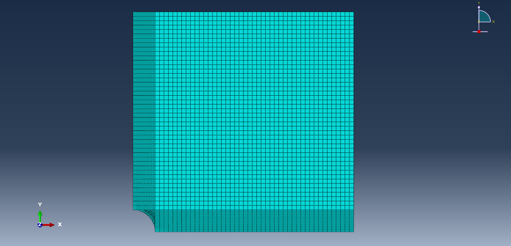
Pulling the S11 and S22 stress contours confirmed the concentration builds exactly where theory predicts: a tensile peak near the top of the hole reaching roughly 3σ, and a corresponding compressive region near the side of the hole in S22. Because that peak is a real physical feature of the solution rather than a meshing artifact, I set the contour limits to preserve it rather than clip it.
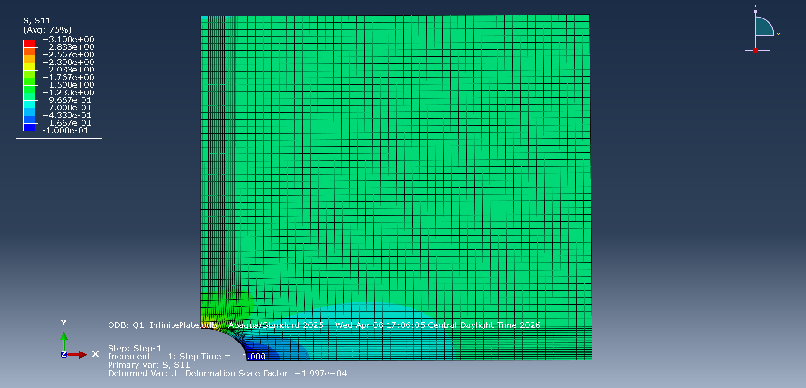
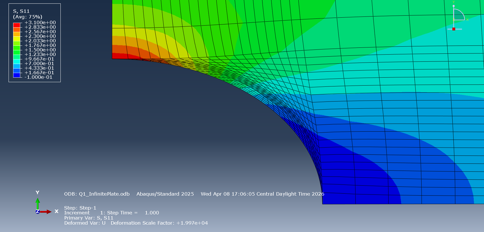
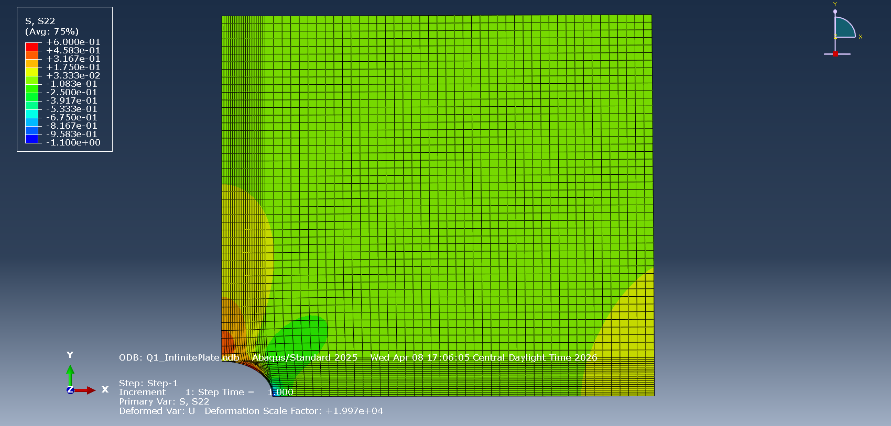
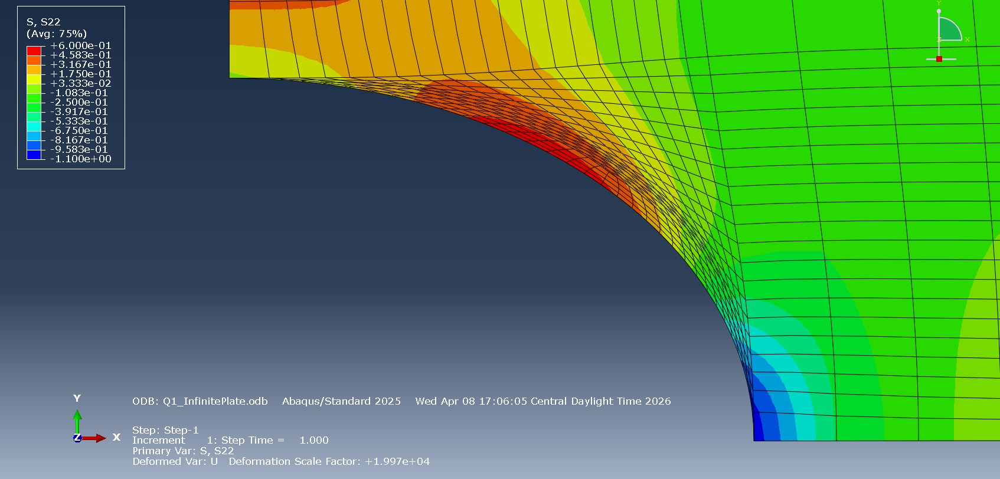
To check the model quantitatively rather than just by eye, I extracted stress along two symmetry-edge paths, converted path distance to radial distance, and compared the result directly against the closed-form tangential stress solution σθ = (σ/2)[1 + a²/r² − (1 + 3a⁴/r⁴)cos 2θ]. Along the y-axis (θ = 90°) the FEA curve approached the theoretical 3σ peak at the hole boundary and decayed toward the far-field σ as expected; along the x-axis (θ = 0°) it approached the theoretical −σ and recovered toward zero moving away from the hole. The agreement across both paths was close enough to confirm the quarter-symmetry model, boundary conditions, and mesh density were all doing their job before I started changing the geometry.
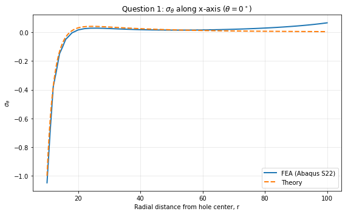
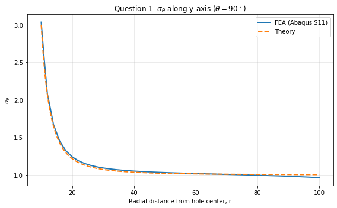
With the infinite-plate case validated, I intentionally broke the assumption it depends on: I narrowed the plate so the hole took up half its width (2a/w = 0.5, with w = 20 mm), keeping the same material, boundary conditions, and mesh refinement strategy. Forcing the same load through a smaller net cross-section produced a noticeably larger stress concentration than the infinite-plate case, exactly as expected.
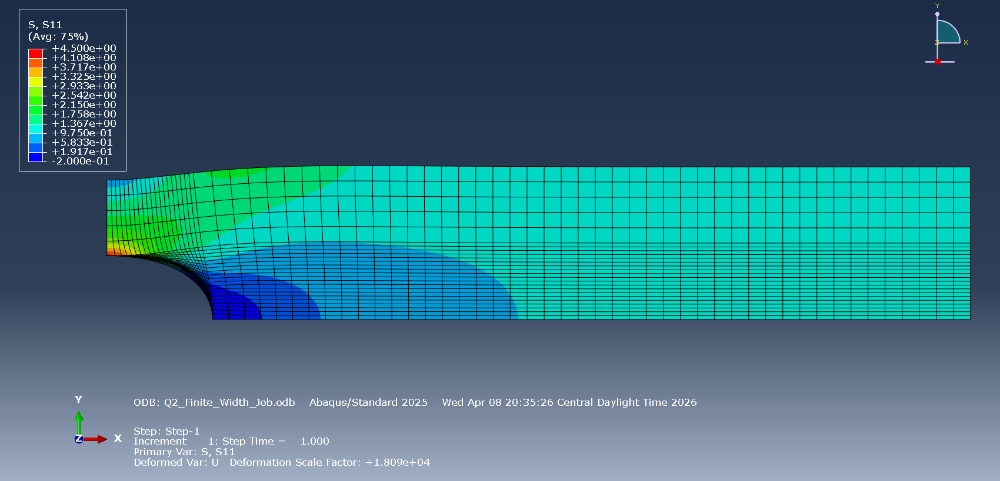
Repeating the same path-based comparison against the infinite-plate formula made the finite-width effect explicit: along the y-axis the Abaqus peak stress at the hole boundary now exceeded the theoretical 3σ limit, and along the x-axis the compressive stress at the boundary was stronger than the analytical prediction, with a more pronounced overshoot before settling toward the far-field value. That's not a modeling error — it's exactly what should happen once the plate no longer satisfies the assumptions the infinite-plate formula was derived under.
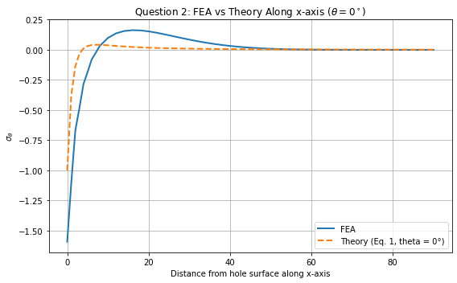
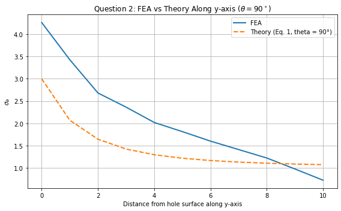
That raised an obvious follow-up: how does the stress concentration factor actually trend as the plate gets wider and the finite-width effect fades? I built four more models at a fixed hole size (2a = 20 mm) but increasing widths — w = 40, 50, 60, and 70 mm (2a/w from 0.5 down to about 0.286) — pulled the peak S11 stress from each, and computed Kt = σmax/σnom against the nominal net-section stress σnom = σ(w/(w−2a)). All four FEA-computed Kt values landed within 2% of a published reference curve fit, and both the FEA points and the reference curve moved the same direction: Kt climbing back toward the infinite-plate limit of 3 as the width-to-hole ratio grew.
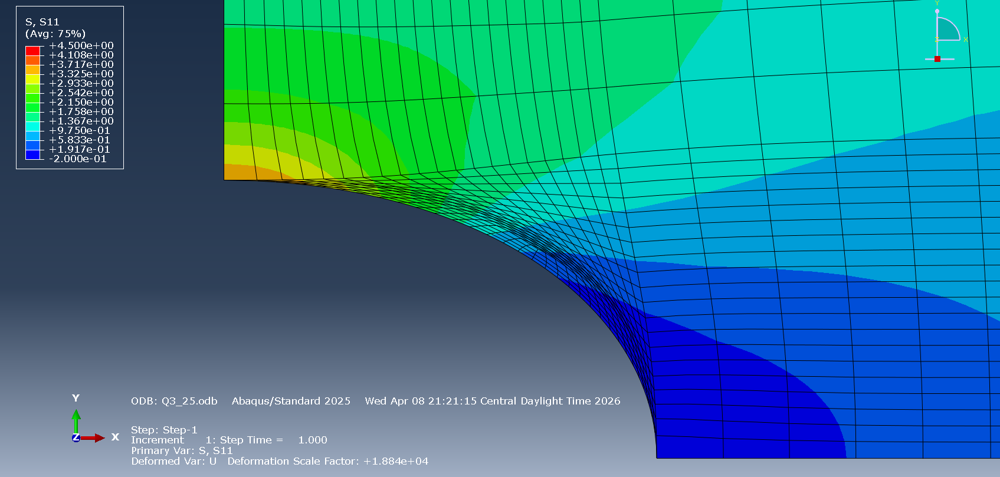
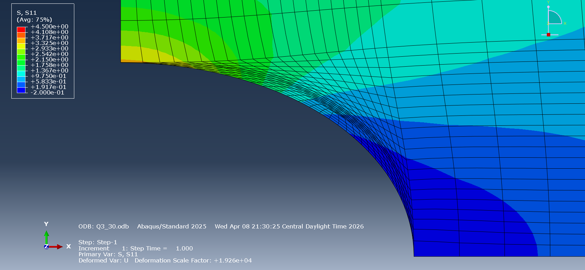
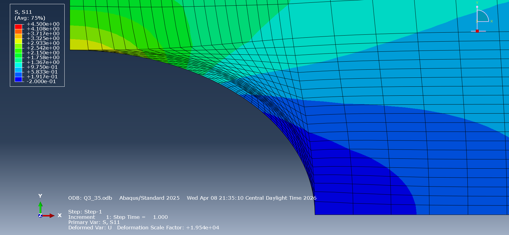
The last stage tested the assumption sitting underneath everything up to that point: plane stress. I took the w = 40 mm finite-width geometry from earlier and extended it into a full 3D, eighth-symmetry solid model at three thicknesses — t = 4, 40, and 400 mm (0.1w, 1.0w, and 10.0w) — using quadratic 3D brick elements, the same material properties and loading, and symmetry conditions on all three coordinate planes. The in-plane S11 stress concentration stayed anchored at the same geometric location, near the top of the hole, across all three thicknesses, which was reassuring on its own: the basic in-plane behavior doesn't change just because the plate gets thicker.
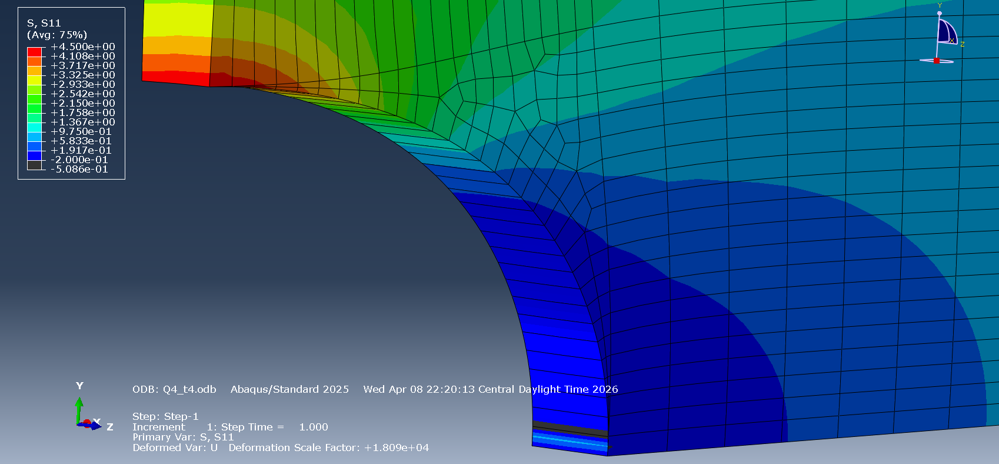
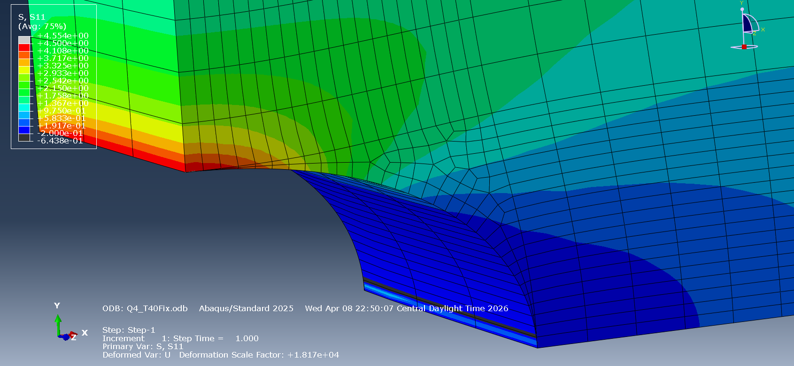
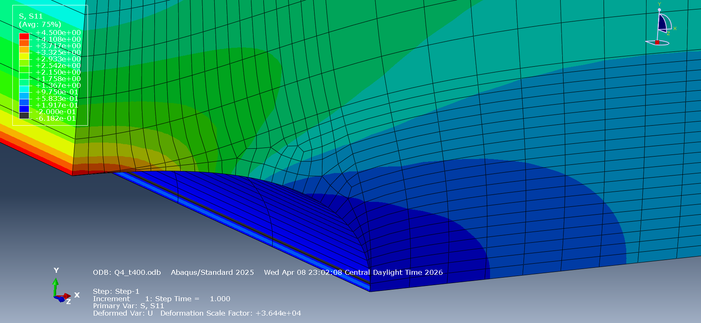
The real story was in S33, the out-of-plane normal stress a true plane-stress model assumes is zero everywhere. For the thin plate (t = 4 mm) it stayed small, around 0.09 MPa at the interior mid-plane and decaying to about 0.06 MPa at the free surface — only on the order of 1–2% of the roughly 4.5 MPa peak in-plane stress. For the medium plate (t = 40 mm) it jumped to about 0.95 MPa at the mid-plane, more than 20% of the peak in-plane stress, and for the thick plate (t = 400 mm) it stayed near 1.0 MPa through most of the interior before dropping off close to the free surface. Visually, the thick model's S33 field wasn't confined to a small region near the hole the way plane-stress theory would suggest — it persisted through most of the interior, which is the clearest sign the model had left plane stress behind.
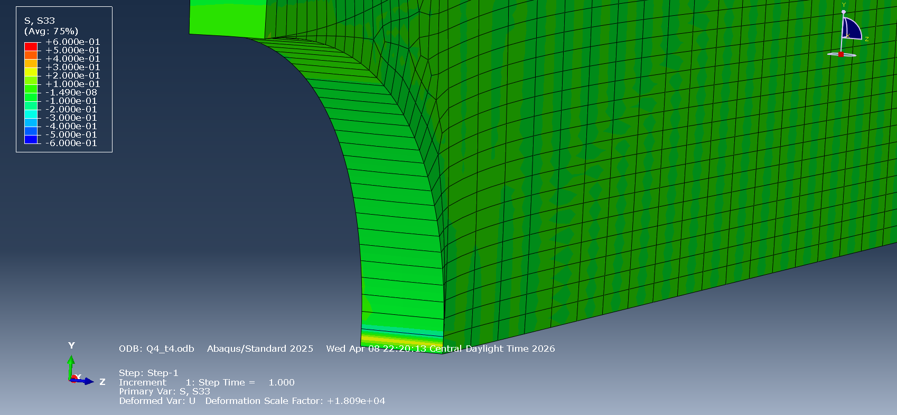
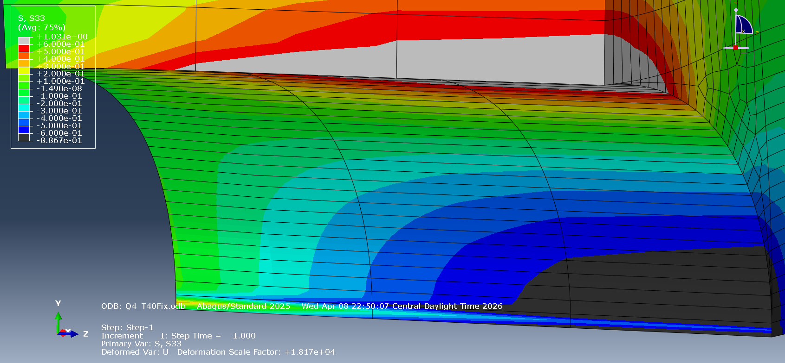
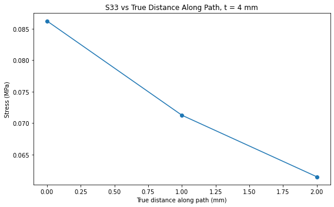
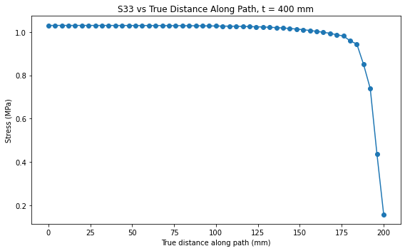
Taken together, the four stages traced a clear line from theory to its limits: the infinite-plate solution held up well under the quarter-symmetry benchmark, narrowing the plate produced exactly the departure from that theory the finite-width behavior predicts, the Kt parametric sweep matched the reference curve to within 2% across four widths, and the 3D extension pinned down concretely where plane stress breaks down — solid at t = 4 mm, questionable by t = 40 mm, and clearly invalid by t = 400 mm.
Tools & methods
Built and solved every model in Abaqus/CAE and Abaqus/Standard: CPS8 quadratic plane-stress elements for the 2D quarter-symmetry models, and quadratic 3D brick elements for the eighth-symmetry solid models. Used Abaqus path tools to extract stress along symmetry-edge and through-thickness paths, and Matplotlib for all theory-comparison and stress-concentration-factor plots.
Outcome
Came out of it with a 2D stress-concentration model that matched the infinite-plate theory closely, a finite-width correction that tracked a published curve fit to within 2% across four plate widths, and a concrete, thickness-based answer to when plane stress is (and isn't) a valid assumption: solid at t = 4 mm, questionable by t = 40 mm, and clearly invalid by t = 400 mm, where out-of-plane stress remained near 1 MPa through most of the plate's interior.